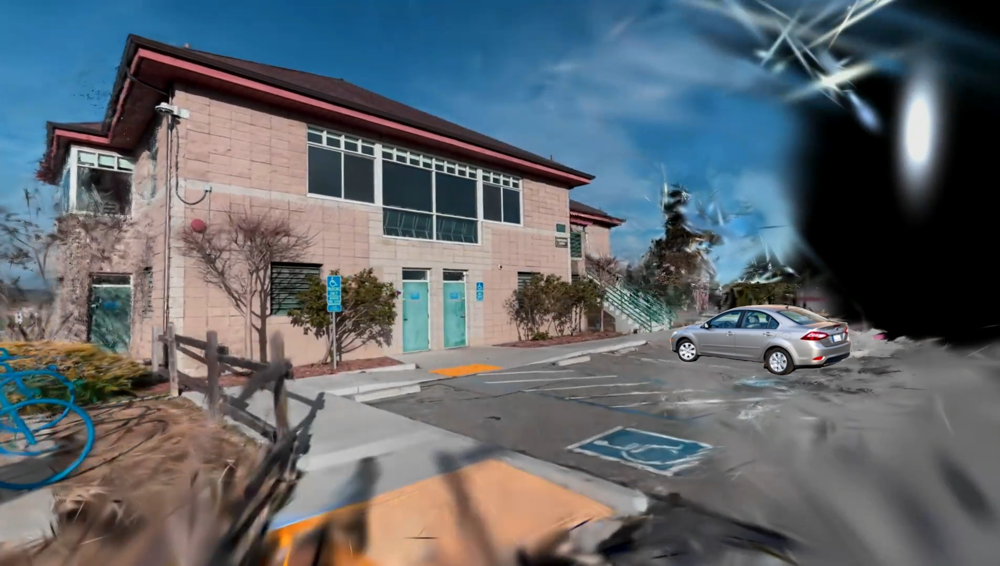
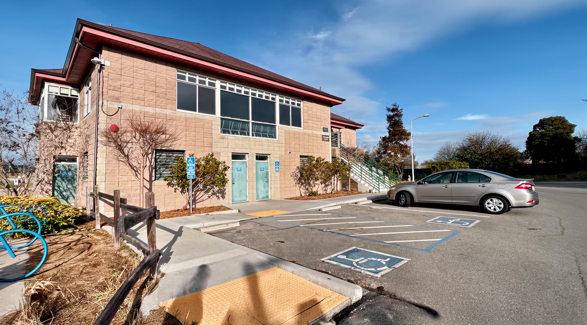

3D Digital Twin Pipeline
Pipeline Architecture
Individual Group Reconstructions (Detector-Free SfM)
Group 0
Group 1
Group 2
Group 3
Group 4
Group 5
Group 6
Group 7
Merge Algorithm
Merged Scene
3D Gaussian Splatting
3DGS Rendering
Unreal Engine
Unreal Engine Integration

VLM Image Editing
VLM Image Editing
